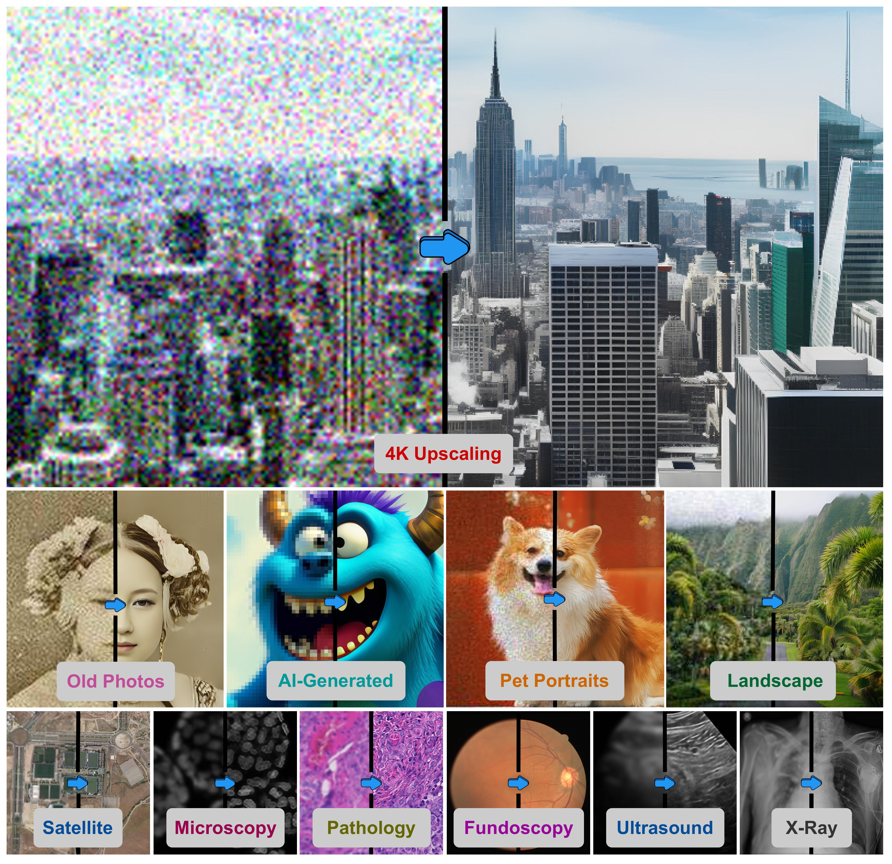

We present 4KAgent, an agentic image super-resolution generalist designed to universally upscale any image to 4K resolution, regardless of input type, degradation level, or domain. That is, 4KAgent
effectively restores diverse imagery, spanning from natural scenes, severely degraded captures, human/pet portraits, AI-generated content (AIGC), as well as specialized scientific imaging domains, such as remote sensing, fluorescence
microscopy, pathology, and medical modalities like X-ray, ultrasound, and funduscopy --- without the need for any re-training or domain-specific adaptation.